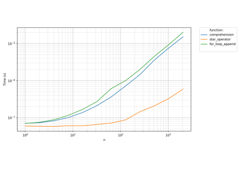
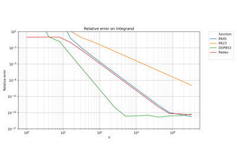
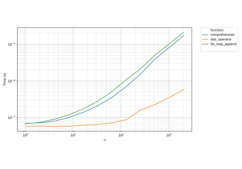

Tutorial# This is the best place to learn how to use pyquickbench. A first benchmark A first benchmark  Caching benchmarks Caching benchmarks Preparing inputs Preparing inputs Handling errors Handling errors  Plotting scalar values Plotting scalar values Plotting transformed values Plotting transformed values  Multidimensional benchmarks Multidimensional benchmarks Time-consuming benchmarks Time-consuming benchmarks